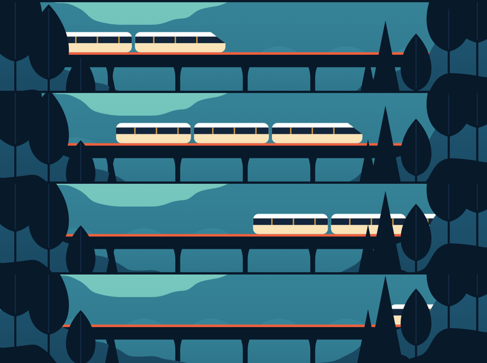
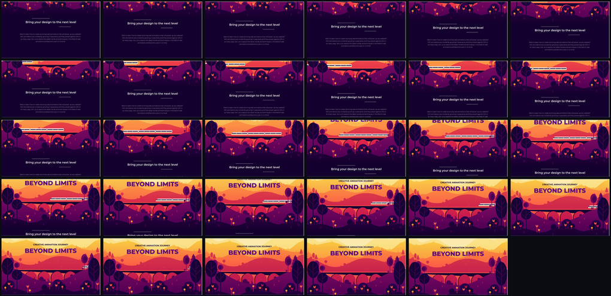

example · scroll-driven parallax
A parallax landscape rebuilt from a 2.25-second screen recording. The ridgelines are traced out of the frames. The layer speeds are measured. One of them is honestly reported as not recoverable.
scroll inside the frame · the train is bound to that scroll
prefers-reduced-motion honoured.
Open it full screen ↗the most interesting thing about this recording
A parallax is scroll-driven. The timing motiscope reports for this clip — a 0.77s hold, then 1.45s of motion — describes the person who did the scrolling, not the design. Replay those seconds and you recreate the recording, not the website.
The train, in the source, is time-driven: it runs on a clock, at a speed that survives however fast you happened to scroll. So one clip carries two different kinds of number.
| Quantity | Kind | Recoverable? |
|---|---|---|
| Layer speed ratios | scroll-intrinsic | yes — four of six layers |
| Train speed | time-intrinsic | yes — 1501 px/s |
| Scroll duration, the hold | the recorder’s | meaningless for the design |
| Train repeat period | time-intrinsic | no — one pass tells you nothing |
a scroll-through of the recreation · the train crosses and exits behind a tree, as in the source
--s,
translateX(calc(-60px + var(--s) * 3.58)). Scroll back up and it reverses.
the video ↗
scrollY = 0, 110, 220, 330.three of four estimators were confidently wrong
Each layer is a flat colour, so each layer is a binary mask. The vertical shift that minimises mask disagreement between two frames is that layer’s displacement.
The trap: layers enter the viewport during a scroll, so any statistic that depends on a layer’s visible extent — topmost row, centroid, a fixed viewport band — moves for reasons that have nothing to do with translation.
| Method | What it actually measured |
|---|---|
| fixed viewport bands | the page scroll, not the layer |
| topmost ridge row | whichever hill peak was tallest; clamped at the screen edge |
| textured-patch tracking | the purple headline text, mistaken for a purple hill |
| mask alignment over a common window | the layer |
They were caught only because they disagreed by up to 6×. Restricting to the window where every layer is on screen (frames 97–134) and accumulating identical step counts, run at two resolutions:
| Layer | quarter scale | half scale | verdict |
|---|---|---|---|
| mid hills | 0.72× | 0.72× | measured |
| deep hills | 0.85× | 0.87× | measured |
| near hills | 0.97× | 1.00× | measured |
| foreground | 1.00× | 1.00× | reference |
| sky / far hills | −0.03× / 0.10× | 0.63× / 0.33× | not recoverable |
A smooth gradient has no stable colour mask. Estimates ran −0.03 to 0.63,
so we don’t quote one. Averaging them into 0.30 would have invented a fact.
In the recreation the sky and the far hills share one factor (0.30) —
a design choice inside the uncertainty. They are the same pale mask, and the measurement
could never separate them.
0.00 while the far hills climbed at 0.30, so the hills ate the sky band
and left a hard edge. We unified them at 0.30, clamped travel to 240px,
and called the leftover artifact a depth inversion. It was not. A near hill sweeping up over
a far one is precisely what parallax is — scrolling down moves the camera down, and near
things climb the frame faster. Nothing ever changed depth. What actually broke was that the sky was
a <rect> inside a layer that sinks at 0.70 × scroll,
and a rect has a top edge. Its only protection was accidental overhang: 474 px on one
viewport, 14 px on another — cut after 20 px of scroll. The clamp hid that edge by
freezing the parallax after a third of one screen. The sky is now the hero’s own
background: no edge, nothing to uncover, travel bounded only by the hero. Every factor
resolves exactly at every offset — we asked DOMMatrix, not a screenshot.
heroH × 1400/heroW canvas rows, so a 745-row terrain leaves nowhere for a
sky to be, at any viewport; padding the canvas cannot invent one. So the land is compressed toward
the horizon by an affine map, LAND_K = 0.78, which leaves the ridge
shapes and the layer factors untouched. Sky went from 7% of the canvas to 28%.
This is a design decision, not a measurement.
The deck is the sharpest rigid feature in the whole clip, so it was tracked directly against both foreground tree apexes:
bridge deck 4.69 px/frame (resid 3.5)
left tree apex 5.88 px/frame (resid 4.4)
right tree apex 5.82 px/frame (resid 4.4)
-> bridge parallax factor = 0.80x ± 0.04Consistent within noise with the deep hills it sits in (0.86×), so it rides that layer — and the train, sitting on the deck, inherits that parallax for free.
track the tail, never the nose
The train was missed entirely at first. It never appeared in a single curated keyframe: it is small, dark-on-dark, and rides a bridge that is off-screen for most of the clip, so it barely moves the motion-energy signal that chooses frames. It was found by diffing the band above the deck, aligned per-frame on the deck row — a localised bump marching from x=950 to x=1200 across frames 112–126.
x=1223 and fits a
beautiful, almost-flat line. Nothing about that number says “I am pinned.”
An occluded feature reports a confident, wrong constant.
| Property | Value |
|---|---|
| Direction | left → right, nose leading |
| Speed in the source | 1501 px/s (tail, frames 96–124) |
| Scroll speed in the source | 419 px/s (both tree apexes) |
| Bound here as | 3.58 units of train per pixel of scroll |
| Length / height | ~708 px × ~58 px, riding the deck at y=498 |
| Easing | none claimed |
Per-4-frame velocity estimates scatter from 1080 to 1800 px/s with no clean trend — that is
measurement noise from the car gaps breaking the colour run, not an ease. Constant speed is
within noise, so linear it is.
and why a median filter cannot do it
The four hill ridgelines are traced out of the final frame, one y per column,
into ridges.json.
Occluders — trees, bushes — always sit in front, which in a landscape means above. So the contamination is one-sided: it only ever pulls a ridge upward.
A median filter does not fix this. A tree crown spans 200 columns, and the median
follows it — the first tracer read the ground at y=496, which was a tree. The
terrain is the upper quantile of the raw trace over a wide window. Ask which way the
contamination pushes, then pick a statistic robust in that direction.
The ground line is the one exception: it is almost entirely hidden behind foreground trees in the source, so it is derived from the purple ridge rather than traced.
all 29 curated keyframes, in order, unedited · the train is in none of them

ask the browser what it resolved — don’t re-measure your own pixels
A pixel-diff of the finished page reported a mismatch. It was measuring occlusion and the page background, not motion. So instead: scroll to 300px and read each layer’s on-screen position. A layer’s on-screen speed relative to the page is its parallax factor.
scrollY=200 (inside --pmax) train: animation-name = none (it is pure geometry)
set_f=0.30 implied_f=0.300 train translateX = 656.0 (expect -60 + 3.58*200 = 656.0)
set_f=0.30 implied_f=0.300
set_f=0.72 implied_f=0.720 scrolling 300 -> 100: dx = -716.0 (the train reverses)
set_f=0.86 implied_f=0.860
set_f=0.97 implied_f=0.970
set_f=1.00 implied_f=1.000a warm sunset became a cool dawn
| Source | Here | |
|---|---|---|
#FBE9AE pale gold | #EAF7F1 mint | sky top |
#FAE086 sand | #CFEBE0 pale aqua | far hills |
#FC7541 orange | #7FCCC2 teal | mid hills |
#C9234C crimson | #38869A deep cyan | deep hills |
#5B0081 purple | #1E5570 navy | near hills |
#170433 near-black plum | #08192A near-black navy | foreground |
The terrain, the viaduct, the train, the tree shapes and the depth order are the source’s.
honest examples teach more than perfect ones
×0.78) to make room for sky. Ridge shapes and
layer factors are untouched.the whole chain, from clip to page
motiscope analyze parallax.mov --preset detailed # -> report.md + curated frames
python3 generate.py > recreation.html # the build script, verbatim